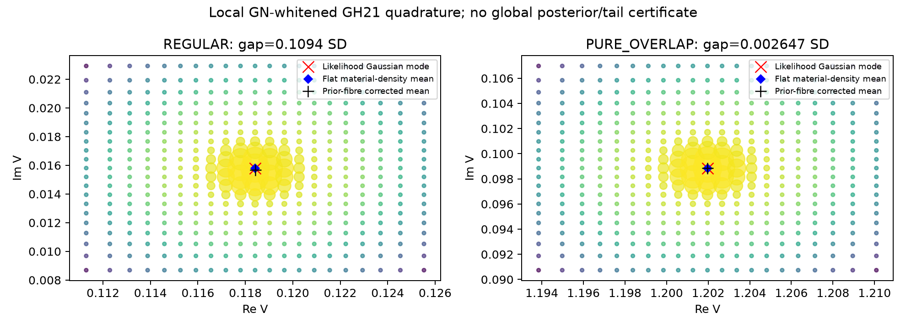
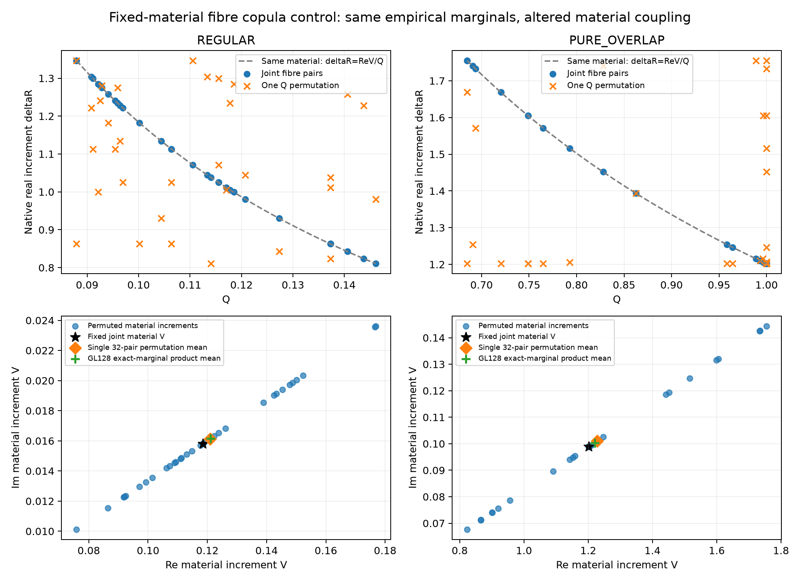
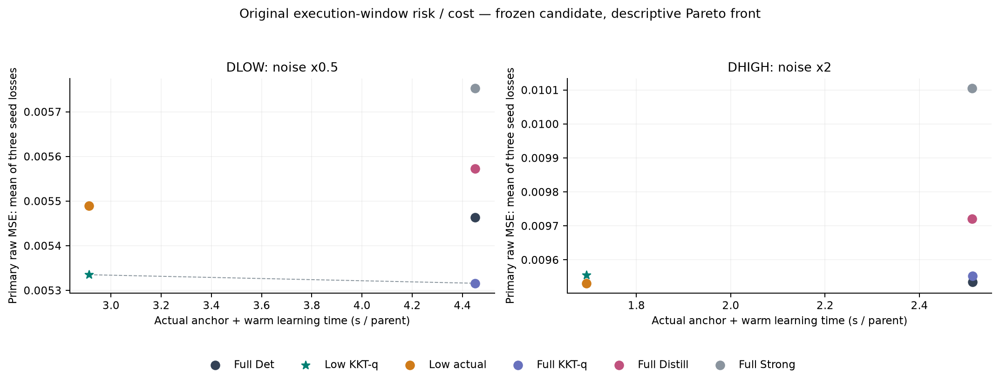
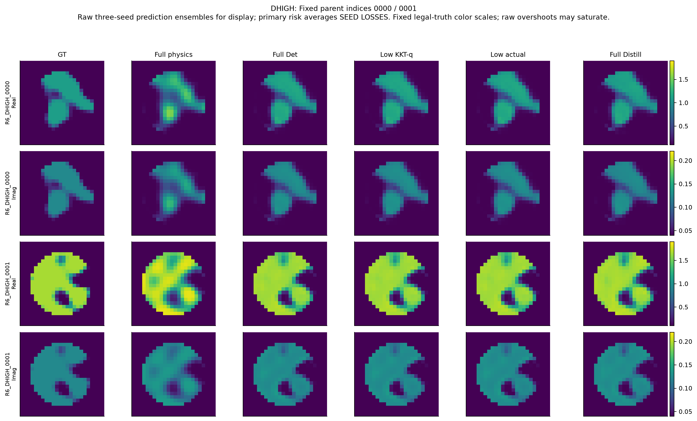

先分清物理问题与三类输出
从复数散射测量恢复材料，需要同时考虑材料图误差、条件概率的适用范围，以及实际求解Maxwell方程的费用。这三个输出各有自己的证据，不能互相替代。
材料风险动作
材料图或功能值按独立parent的任务损失评价；不自动称为posterior mean或概率认证。
低维局部概率
指定2D/3D条件子模型的积分与latent功能；Q1/Q2数值收敛不等于Full66或全局尾部证书。
物理计算加速
比较真实锚点路径与完整成本，并保持相同估计器的风险合同；模块微秒不替代系统wall。
本轮起点与历史事实
历史证据与不可改写的失败
R5 scientific ad71a86e、R4 85b7bcbf、R5B报告d6fb5500分别标识不同实验。R6从已发布B1的3a5c31cd建立独立worktree。读取实际本地原始资产，不把R5T精简包当作所有训练数据。
R5B的512个新对象已完成、已暴露、正式封账1,999,504 RHS；本轮没有再次计算这批512来证明同一个结论。
| R5B冻结估计器 | Full-grid MSE |
|---|---|
| Physics Probit | 0.0107810332647 |
| Strong CNN | 0.00722153791166 |
| K32 Fusion | 0.00694330861409 |
| 确定性Q64 | 0.00685473367122 |
| 214k Distill | 0.00699701813465 |
保留率80.70%，调整区间约[60.28%,113.12%]：至少80%仍HOLD。provider压缩97.97%与整条学习链节省46.32%已确认，但含1.7303秒物理anchor时全系统推导节省仅0.0117%。固定三checkpoint分歧解释94.85%风险差，是有限集合恒等式，不是总体训练方差，不证明容量足够。
历史Full66 posterior、混合链、importance ESS、逐源SMC和Gaussian近似不合格均保留。A17在dense TM24无独立净成本优势；R6不强行加入。原CPU/MPS3e−6逐像素门FAIL也不改写。
R5T的Full66 decoder-only host原子约0.000688是先验推送质量，后验质量未知；二维切片约22.086%的host prior不同。三次接缝与补偿命题带条件，不是任何Maxwell场景的普遍速率。R5T包中尚未执行的B0确认已被之后的R5B实际完成，R6按时间顺序处理这个差异。
本轮资产与80项报告章节审阅清单见audit/r6_evidence。ScholarQA初始6请求与延迟paper-only重试均429；保留bundle，不用失败检索冒充新颖性证据。最近先例仍以原报告核对的coarea/disintegration、RTO、Laplace/QMC、goal-oriented Bayesian inverse、conditional-mean derivative与知识蒸馏为基础。
本轮真实结果与适用范围
本轮完成了分层概率、同容量功能学习、物理锚点优化及两档新噪声的独立实验。最实用的结果是：原始Full Maxwell不变，减少不必要的前置优化，在两批新对象上能明显减少实际物理计算。最重要的限制是：强化后的普通对照同样很强，完整后验仍未认证，目前不能把这项收益升级为独立Maxwell理论突破。
物理实验已封账：6,860,984 RHS、210,355个新状态/LU，低于8,000,000硬上限。33个新训练阶段保留全部checkpoint、日志和失败。新确认使用512个独立parent，不复用R5-B的已暴露512。两组noise分开统计，不合并成一个有利均值。
新增物理费用
已闭账，上限8,000,000；历史费用未重计
新的独立对象
两档噪声分别统计；512预测先封存再GT评分
原窗口完整系统节时
原冻结基线范围；强化参考与跨窗口门仍有限制
实际主图
图的适用范围以原文为准
局部材料矩

图的适用范围以原文为准
材料纤维与破坏相关后的材料

图的适用范围以原文为准
新对象风险与实际费用

图的适用范围以原文为准
固定高噪对象

负结果与未运行项目
R6 失败、纠错与没有建立的结论
本文件把执行错误、数值资格不足和算法负结果分开。实验的负结果不等于 Maxwell 无解，也不等于真实 posterior mean 不如点估计。
执行错误与修复
- 外置磁盘短暂不可访问。 P0 首次只读审计遇到设备不可用；恢复后才继续，没有借此删除数据、修改历史记录或启动未经计费的求解。
- 审计副本缺少 threadpoolctl。 R5T decoder-only 回放首跑失败。保留错误，只在隔离副本使用原线程环境约束，不安装新依赖或修改历史输入。随后解析/decoder回放完成，仍是零新物理的重复证据。
- A 的 prior 数值归一化不足。 早期材料商积分跨过 pure/transition 和事件边界，先验归一化失败。增加明确分段和正确边界积分后才进入正式物理；失败版本和单元保留。归一化修复没有自动解决高SNR的窄 likelihood，后者仍作为科学负结果。
- C 推断输入 dtype 不符。 float64 测量进入要求 float32 的旧 Torch 接口，未完成封存。修正原定义的 observation_features 类型，旧未封存文件及错误保留；没有根据GT改模型，也没有重跑 Maxwell。
- C 相区评分定义错误。 开发评分一度按GT相区而非冻结完整 anchor 相区分层。旧版本保存在
track_c/BUG_GT_PHASE_DEFINITION/。修正仅影响相区解释，20项主要风险、成本和gate及逐对象loss数组逐项不变；收据见PHASE_CORRECTION_RECEIPT。D在执行前即冻结为完整anchor相区。 - D 首个 Full 路径的报告序列化失败。 Native96+Probit64 的156个新物理状态、5120 RHS已经完整完成，写外层JSON时遇到ndarray。流程立即停止。独立审计核对材料、J、场/current、预测及账本后，从既有记录恢复报告，零额外RHS。原CLOSED=FAILED保留，模型、比较族、阈值与预测算法不变。恢复只改变JSON serializer和显式行政恢复侧记。最初丢失的外层清理计时使用已存CLOSED总wall作为主成本，并在评分前预先登记较小Full分母的描述性敏感性检查；不会把该修复宣称为原任务从未失败。
概率计算尚未通过的门
准确的 prior 网格在 regular/overlap 情况下仍会漏掉极窄的 Maxwell likelihood。局部 GN 白化 GH 加密可稳定材料矩和纤维权重，但没有全域尾部或其他模式质量证书。Q1/Q2数值收敛不升格为完整后验认证；没有用离散节点经验测度报告连续 TV≈0。
本轮没有建立“材料均值认证比模式质量认证更省物理费用”的任务成本分离。host 小例中粗网格两者均过门，regular 的全局规则又未通过均值门；不能选择有利例子取代该结论。四维扩大未启动。Full66后验原子质量仍未知，二维/三维host约22%不能替代Full66先验约0.0688%的原子。
学习与锚点的真实负结果
N1024、同214k容量、相同4000+4000更新的feature/GT/action新目标未击败历史N32768的部署基准。新四臂之间可比较监督方式，跨数据规模不能作因果结论。固定三seed分歧分解是有限模型集合恒等式，不是总体训练方差。条件任务响应矩小实验中，1/sigma²放大了回归一致性误差；并非已有资产的浮点精度不足，也未取得真实posterior covariance参考。
简单同时截断Native和Probit使材料风险变差；仅保留Native的匹配head也没有过1%风险非劣门。用512匹配样本重新训练较弱Full head，不能把这个新弱基线替换原1024强基线来救成功。后续保留较充分Probit、减少Native的配置另行预注册，原失败不改写。
KKT feature闭合在开发集通过成本/非劣门，但同端点q与真实梯度的风险差区间跨零。一个gate通过、另一个未通过不构成两算法显著不同的证据。新噪声确认会将成本收益与闭合的独立机制比较分开；普通direct-prior Probit也须作为强控制，不能用不必要的warm阶段制造优势。
数值与外推限制
原CPU/MPS逐像素3e-6门仍为历史FAIL；本轮B的跨设备最大差约4.06e-6只是量化漂移，不事后放宽旧门。物理状态complex128反向残差属于离散数值检查，不是连续 Maxwell PDE 认证。所有风险图像是点决策，不自动是合法decoder世界或posterior样本；本轮没有用它们宣布概率校准。
ScholarQA多次429保留原bundle，不能把检索空缺包装成原创性证据。标准stationarity、复解析导数、条件期望、投影收缩和coarea不作为新通用定理。是否有独立算法贡献由最终新对象风险、强普通对照及完整wall结果决定。
最终强化控制与计时漂移
原global8在两噪声条件的风险/成本门均通过。将同一q闭合放到完整anchor后，低噪1% NI没有确立；不能只选有利完整基线。原窗口与评分后同窗口重放的端点逐字节数值一致，绝对wall却改变；新窗口低噪20%下界16.82%，Direct与Low的优势区间跨零。原通过不抹去，跨窗口与更强参考的资格也不升级。见track_d/FULL_Q_REFERENCE_POSTHOC.json和audit/r6_evidence/TIMING_DRIFT_REVIEW.md。
完整成本与资源缺口
8. 成本、错误与复现
| 阶段 | 新增RHS |
|---|---|
| A分层/补偿/控制 | 158144 |
| B复用数据学习 | 0 |
| C开发/匹配anchor/普通强控制 | 2864200 |
| D新512/补充/同窗口重放 | 3838640 |
| 总计 | 6860984 |
中央JSONL逐行与快照对账，无活动action/job、无物理数值失败；一项JSON报告失败原样保留，独立审计后零新增物理恢复。物理job wall5147.36秒，solver kernel3310.51秒；保守MPS训练job .2414 device-hour。它们不是把所有编辑/文献I/O都伪称已经逐条CPU profiling。其他分析、推断和交付费用有各自收据，详见资源。
原CPU/MPS3e−6门FAIL不改；本轮设备漂移单列。相区评分早期错误、dtype修复、数值积分失败和所有新目标负结果见失败分析。原始数组无损保存，没有为清理磁盘删掉失败或账本，也没有保存每个query的LU强引用。
各路线判定：原文呈现
R6 科研裁决
本轮完成真实A/B/C及两组新噪声确认，物理账本已封：6,860,984/8,000,000 RHS。以下判定不能互相替代。
| 方向 | 判定 | 实际依据与边界 |
|---|---|---|
| GO-A 分层Maxwell概率 | REDIRECT | 正确材料纤维体积、gauge补偿、局部Q1/Q2矩和copula反例成立；全域参考、4D及同任务误差成本优势未建立。 |
| GO-B 新任务功能训练 | STOP 扩大本轮目标家族 | N1024同容量/同优化预算的4目标×3seed没有胜过历史N32768部署器；保留原模型，不推断NN或GT监督无效。 |
| GO-C 真实物理费用 | 限定GO；强化控制HOLD | 原冻结global8中，两噪声均过1%风险NI和20%完整系统wall门。更强Full-q基线下，低噪1% NI未确立；同窗口小样本复测的低噪20%节时下界也不足。 |
| GO-D 独立泛化 | 限定GO | 512新parents、sigma×.5/×2，网络权重不变；KKT独立风险收益仅低噪成立。采集/layout泛化NOT_RUN。 |
| GO-TAP 独立科学贡献 | REDIRECT | 普通direct Probit也覆盖主要费用收益；尚无足够证据将其称为Maxwell专属突破。概率机制可形成下一轮具体数学问题，当前不宜拼装成强TAP结论。 |
必须同时保留的三个层次
原预注册确认通过。 低噪候选MSE=.005335107，对原Full=.005463559，降低2.351%；高噪=.009555500，对原Full=.009534329，增加.222%。完整系统原窗口节时34.551%/32.571%；20000 parent bootstrap、全局8比较Bonferroni判据未改。
独立机制只部分成立。 同一低成本端点上，q闭合相对真实梯度低噪风险差−.000154137，调整单侧上界−.000078648；高噪差+.000024283，上界+.000053204，未建立收益。不能用低噪通过替高噪背书。
强对照收窄结论。 将同一q闭合放到完整anchor后，低噪完整基线MSE=.005315940。候选比它高.3606%，1% NI contrast上界为+1.26745e−5；即使点差很小，仍未统计确认。此为事后强化基线分析，不能反向修改原global8，也不能包装成新确认族。
Direct-prior Probit128+q在预先冻结的补充64+64对象中有竞争力；其单独窗口的绝对时长不与原窗口作严格加速比较。同窗口交错复测16+16对象、96条付费路径后，Direct相对完整anchor节时29.31%/36.34%，但相对24+64的优势区间跨零。低噪新窗口Full→Low节时95%下界16.82%，不支持跨窗口必有20%的普遍断言。
下一步
保留普通Probit与相同闭合特征的完整/低成本对照，先在新layout与更大二维系统检验成本—风险关系，再决定论文。概率方向聚焦材料商和条件依赖保留，优先解决非均匀场与全域质量控制；不再以独立Gaussian强方向或大型Flow作为默认答案。
完整数字见结果JSON、新确认、理论与反例。旧R5-B至少80%收益保留率仍HOLD，完整66维posterior仍未合格。